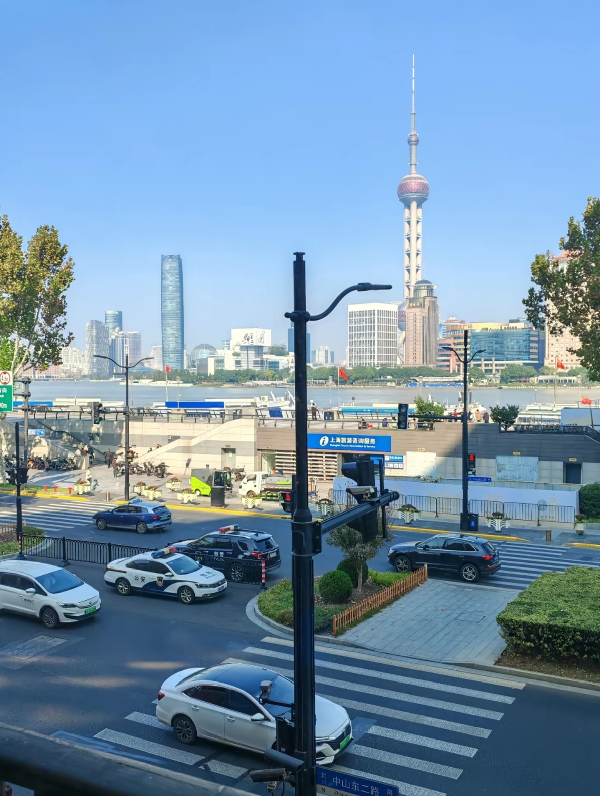
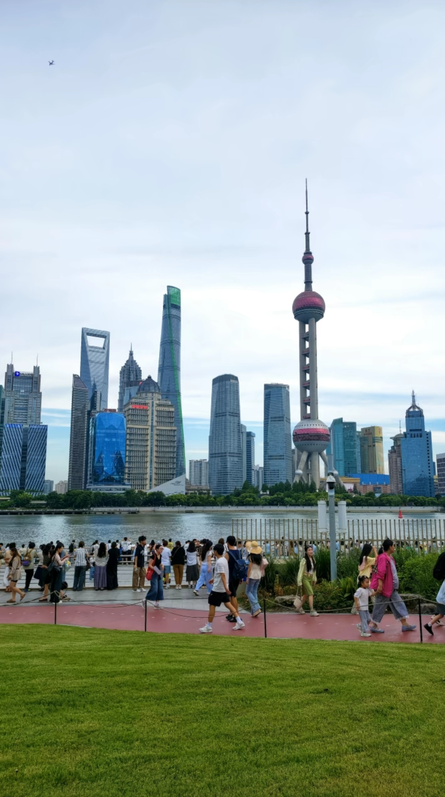
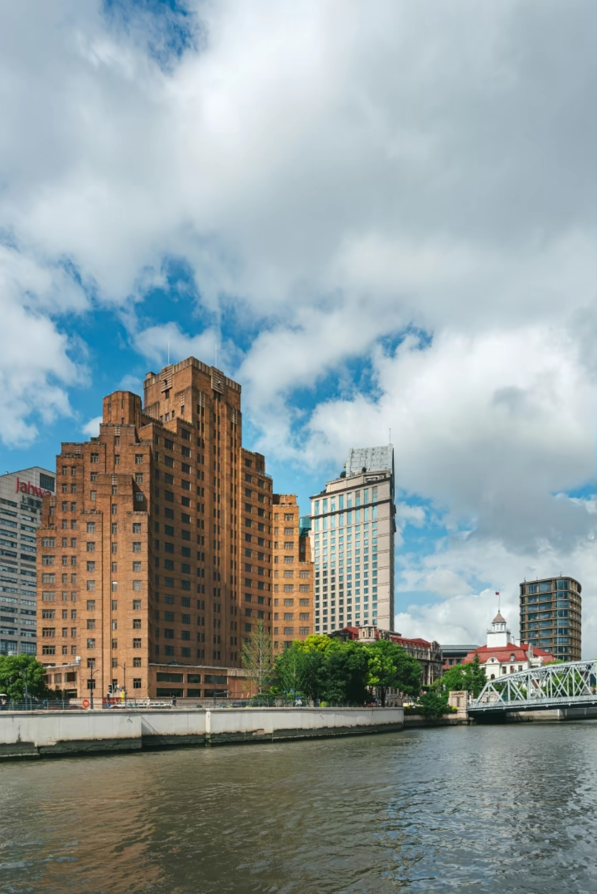
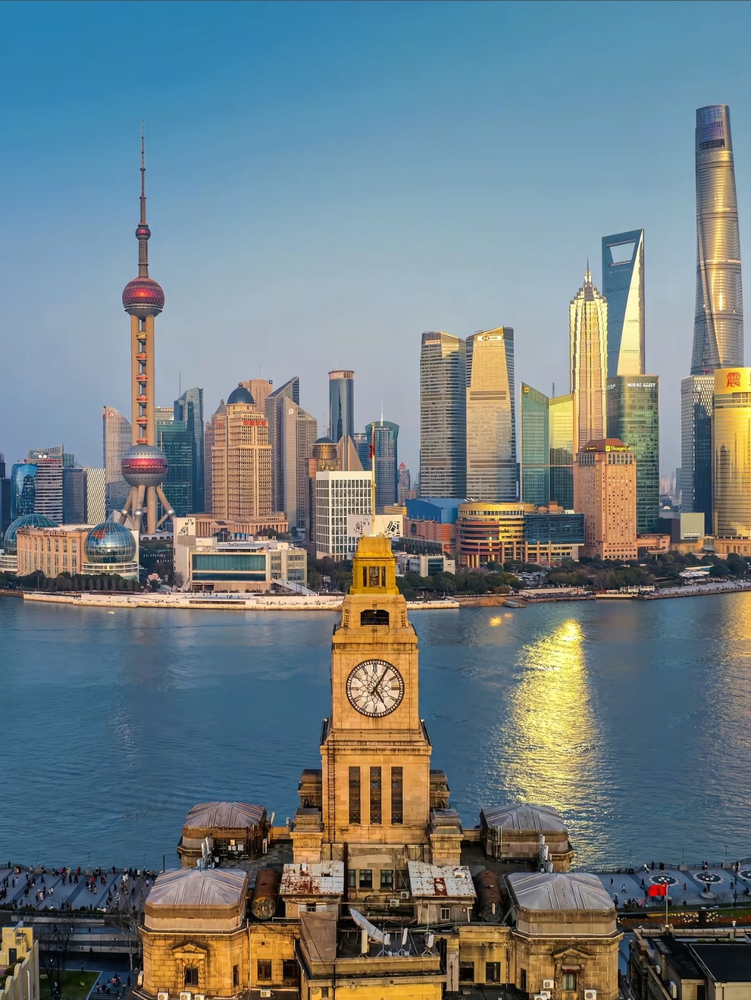
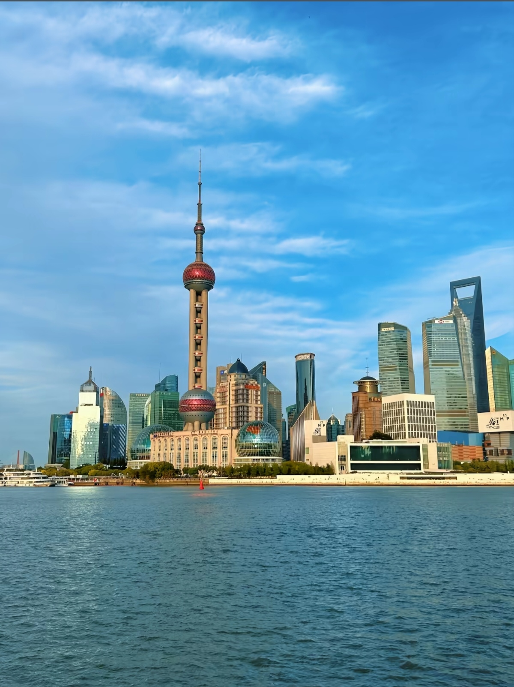
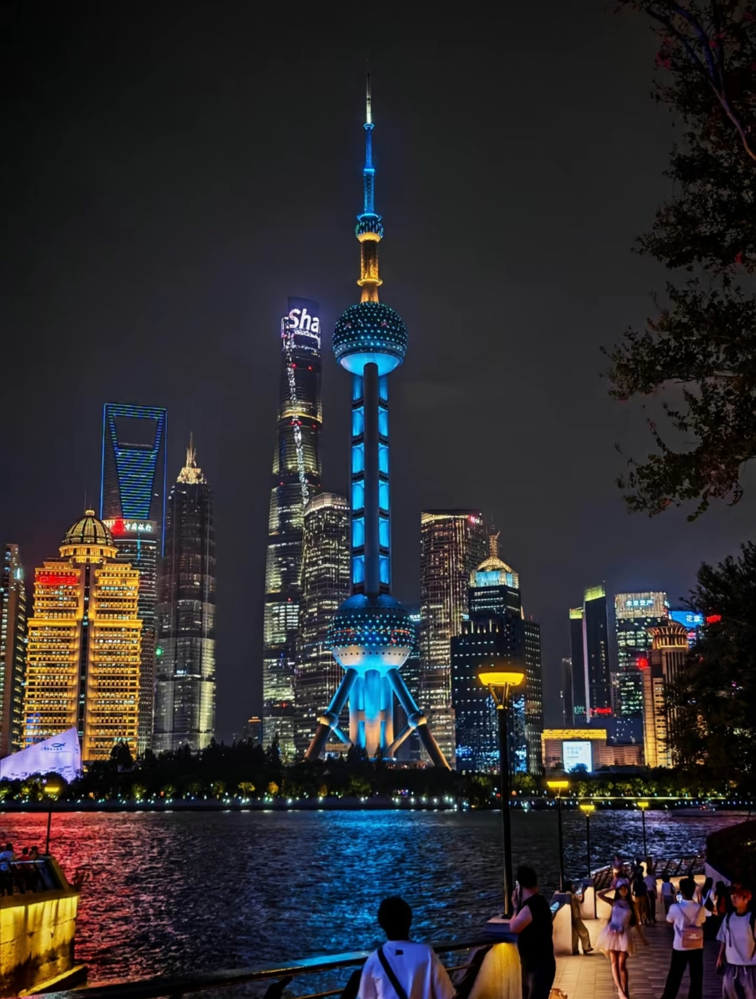

The Bund is Shanghai's most famous waterfront area, featuring a stunning contrast between colonial-era European buildings on one side and the futuristic Pudong skyline on the other. Stretching 1.5 km along the Huangpu River, it's the perfect place to experience Shanghai's unique blend of old and new. At night, the illuminated skyscrapers create one of the most spectacular cityscapes in the world.






Line 2 or 10: Get off at Nanjing East Road Station (南京东路站), Exit 2 or 3. Walk 10 minutes east to The Bund. Cost: ¥3-4.
DiDi/Taxi: Tell driver "Waitan" (外滩). From People's Square: 10 min, ¥15-20. From Pudong: 20 min via tunnel, ¥30-40.
Bus Routes: 33, 55, 123, 135, 307 all stop near The Bund. Cost: ¥2. Good for budget travelers.
Huangpu River Ferry: Take ferry from Pudong (Dongchang Road) to Puxi. Cost: ¥2. Scenic and cheap way to cross the river.
Start: Waibaidu Bridge (Garden Bridge) → Walk south along the promenade → Pass all historic buildings → End at Jinling East Road Ferry Terminal
Highlights: 52 historic buildings, river views, photo opportunities
Best Time: Sunset to night (5 PM - 9 PM)
Start: People's Square → Walk east on Nanjing Road Pedestrian Street → Arrive at The Bund → Continue to Yu Garden area
Highlights: Shopping, historic architecture, local snacks
Best for: First-time visitors wanting comprehensive experience
Start: Shiliupu Wharf or Qinhuangdao Wharf → 45-min cruise → See both Bund and Pudong from water
Cost: ¥120-180 per person
Best Time: Evening cruise (7 PM - 9 PM) for light show
Start: Arrive 30 min before sunset → Best spots: Waibaidu Bridge, Peace Hotel corner, Custom House clock tower → Stay for night light show
Tips: Bring tripod, wide-angle lens. Best from Pudong side looking west.
Location: 5F, No. 18 Zhongshan Dong Yi Road
Specialty: European cuisine with Bund views
Hours: 11:30 AM - 2:30 PM, 5:30 PM - 11:00 PM
Location: No. 17 Zhongshan Dong Yi Road
Specialty: Authentic Yunnan dishes, exotic flavors
Hours: 11:30 AM - 10:30 PM
Location: Multiple locations near The Bund
Specialty: Shanghai xiaolongbao (soup dumplings)
Hours: 7:00 AM - 8:00 PM
Location: 6F, No. 18 Zhongshan Dong Yi Road
Specialty: Contemporary French with river views
Hours: 6:00 PM - 12:00 AM
Location: No. 20 Nanjing East Road (on The Bund)
Features: Historic luxury, Jazz bar, River views
Distance to Bund: On The Bund
Location: No. 32 Zhongshan Dong Yi Road
Features: Rooftop bar, Spa, Bund views
Distance to Bund: On The Bund
Location: No. 585 Zhongshan Dong Er Road
Features: Modern design, Rooftop pool
Distance to Bund: 5 min walk
Location: Nanjing Road Pedestrian Street
Features: Central location, Shopping nearby
Distance to Bund: 10-15 min walk